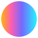

The shared digital palette, alongside the original Lugano's Plan ₿ mark.
White commons. One signal.
Start with clarity. Use color to guide attention. Keep the civic purpose visible.
Color with a job to do.
Navy gives structure. Blue makes connections. Gold marks a moment worth noticing. Warm white gives all three room.
Select any swatch to copy its hex value. Core colors remain fixed here; the page theme demonstrates their semantic alternatives.
A warmer night.
Dark mode pairs charcoal #171717 with white text, Civic Coral #E15364 and Bitcoin Orange #F7931A. The electric trio stays constant.
Contrast before color.
Use ink on blue, gold and light grounds; warm white on navy. Civic Sky is not a body-text color on white. Check at least 4.5:1 for ordinary text and 3:1 for large text.
Energy, in one continuous gesture.
Choose gold or a gradient as the exceptional signal. Keep text on a solid, readable ground.
Both are existing theme tokens. The legacy “heading” token is shown as a surface specimen; solid-color headings are preferred. Dark variants are included in the token files.
Font family: Inter.
Inter is our primary sans-serif font for headings, body text and slides. One family, with weight and spacing creating a clear hierarchy.
Make room for possibility.
Inter ExtraBold · font weight 800
Aa Bb Cc 0123456789
Headings
ExtraBold 800 · 1.08–1.12
Titles & navigation
Bold 700 · 1.2
Body
Regular 400 · 1.6
Code & values
System monospace
Web font weights and line heights are shown above. Line height is a multiplier of font size. Keep body lines around 65–75 characters.
Web fonts.
The guide self-hosts Inter variable WOFF2: upright styles, weights 100–900, Latin subset. No external font request is needed. Use 400, 700 and 800 for the hierarchy above. font-display: swap keeps text visible while Inter loads.
Slide & desktop fonts.
Install Inter Regular (400) and Inter Bold (700), then restart your presentation app. The slide template uses these two weights. Fonts are supplied in the kit, but are not embedded in the PPTX or POTX.
Fallback fonts.
On the web, use "Inter", "Segoe UI", Arial, sans-serif; the browser selects the first available font. Code uses Consolas, "SFMono-Regular", monospace. Presentation apps do not use this CSS stack: if Inter cannot be installed, replace it throughout the deck with Segoe UI or Arial, then check every line break and text box.
Font coverage & license.
Inter is open source under the SIL Open Font License 1.1, included with the files. The web kit contains no italic font. For true italics or additional language coverage, get the appropriate files from the official Inter website and check the characters your content needs.
Simple shapes. Open edges.
Rounded surfaces organize information. A small dot or short band connects the identity. Geometry supports the content.
Quiet surfaces12px cards · 16px panels
Learn together
Compact actions44px minimum height · pill radius

One connective detailDot or band · use sparingly
1180pxReading container
56pxSection rhythm
16pxGrid gap
20 / 12pxDesktop / mobile gutters
These layout recommendations come from the shared DESIGN.md; individual applications may use wider data layouts. The dot and band are new reusable SVG expressions of existing theme geometry.
Original vectors. Ready to use.
Preserve the artwork, proportions and intrinsic colors. These are the existing Lugano's Plan ₿ marks, not a newly designed Foundation logo.
Color, black and white originals are included. “Black” artwork may retain orange. The wide white logo has different bounds; never stretch it to match another variant.
All variants, supporting marks & shape downloads
Partner marks identify their respective organizations; their inclusion does not imply endorsement. Use the existing asset rights and source attribution. Read asset notes.
Keep the mark intact.
Choose a contrasting ground, leave breathing room and preserve the SVG view box. Do not recolor, crop, distort or add effects. Clear space here is an application recommendation, not an invented official specification.
Show the real place.
For photography, use Lugano, public spaces, workshops and people making or learning. Prefer truthful context and natural light. Avoid floating coins, stock server rooms and luxury crypto imagery.
Projects.
Distinct identities within the Plan B ecosystem. Use each project’s own artwork, colors and source files.
Bitcoin Roots
A Bitcoin Core-based full node with configurable policy and operator controls.
Transparent SVGs with the same 512 × 512 view box. Orange is the original; black and white change only the fill. Preview backgrounds are not part of the files. Preserve the shape and proportions.
Use the JSON with a Lottie-compatible player. Provide a static SVG for reduced motion or when playback is unavailable. All four files are included in the complete brand kit.
Put the system to work.
A small, live example. Change the page theme to see the same semantic tokens carry the interface.
Technology for the commons.
Learn, test, question and contribute. Start with a concrete public need, then make the technology understandable.
Download the kit, install the included Inter fonts and open the light or dark PPTX. Use the matching POTX to start new decks. Both editions include a movable top gradient and editable cover text. Copy wide, square or tall SVG logos from the library slides. To change every footer, edit the two text boxes on the top parent Slide Master. Choose the edition independently of this webpage’s appearance. Read the slide guide.
Vite theme supplies the reusable shell and token values. The Foundation guide supplies the civic design principles. Ghost theme adapts the palette to publishing with its own variable names and configurable fonts.